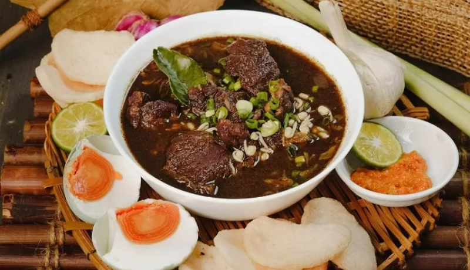
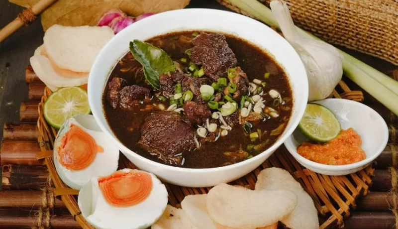

Rendang
Rendang merupakan masakan yang berasal dari Minangkabau, terbuat dari olahan daging yang dimasak dengan bumbu rempah. Kuliner yang satu ini begitu digemari karena punya cita rasa yang lezat. Bahkan, tahun 2017 lalu, rendang dinobatkan sebagai makanan terenak nomor 1 versi CNN Travel.
 
